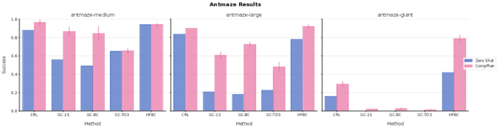

Why it matters왜 중요한가
The hard part of long-horizon planning isn't the policy — it's predicting many steps ahead without errors compounding.
장기 계획의 진짜 어려움은 정책이 아니라, 오차가 누적되지 않게 '여러 스텝 앞'을 내다보는 일이다.
Classic model-based planning rolls out a one-step world model action by action — over a long horizon, tiny prediction errors snowball and the plan walks through walls. Hierarchical RL fixes this with task-specific high-level controllers, but each new task needs new training. This paper takes a different route: keep the pre-trained policies as building blocks and plan directly over sequences of them. Because each policy is followed for a stretch of time, the planner reasons at a coarse, "jumpy" timescale — fewer, longer hops instead of hundreds of fragile primitive steps. Crucially this is zero-shot: no fine-tuning, no extra environment interaction.
고전적 모델기반 계획은 1스텝 월드모델을 행동 단위로 굴린다 — 장기 지평선에선 미세 오차가 눈덩이처럼 불어나 계획이 '벽을 통과'한다. 계층적 RL은 과제별 상위 컨트롤러로 이를 해결하지만 새 과제마다 재학습이 필요하다. 이 논문은 다른 길을 택한다: 사전학습 정책을 빌딩블록으로 두고, 그 시퀀스 위에서 직접 계획한다. 각 정책을 일정 시간 동안 따르므로, 플래너는 거칠고 '점프하는' 시간 척도에서 추론한다 — 수백 개의 깨지기 쉬운 원시 스텝 대신 더 적고 긴 도약으로. 핵심은 제로샷이라는 점: 미세조정도, 추가 환경 상호작용도 없다.

By the numbers핵심 숫자
primitive-action planning (long-horizon)원시행동 계획 대비
평균 상대 향상 (장기 과제)
(long-horizon, avg.)CompPlan vs ActionPlan
(장기, 평균)
(best-single-policy baseline)CompPlan vs GPI
(최선의 단일정책 베이스라인)
CompPlan · SHARSA · HIQLcube-4 성공률(%)
CompPlan · SHARSA · HIQL
(GC-1S, antmaze-giant)TD-HC의 EMD 감소
(GC-1S, antmaze-giant)
(GC-TD3·GC-1S·CRL·GC-BC·HFBC)테스트한 베이스 정책 유형
(GC-TD3·GC-1S·CRL·GC-BC·HFBC)
Results — composing policies beats hierarchies결과 — 정책 조합이 계층을 이긴다
| Domain | HIQL | SHARSA | CompPlan |
|---|---|---|---|
| antmaze-medium | 0.96 | 0.91 | 0.94 |
| antmaze-large | 0.84 | 0.90 | 0.92 |
| cube-3 | 0.01 | 0.01 | 0.92 |
| cube-4 | 0.00 | 0.09 | 0.67 |
In one diagram한 장의 그림
Idea: predict the jump, then add consistency아이디어: '점프'를 예측하고, 일관성을 더하다
Geometric Horizon Models (GHM)
Instead of next-state prediction, a GHM is a generative model of the successor measure — the discounted distribution over states a policy will visit, sampled at a geometric halting time. Implemented as a flow / ODE over continuous states, it lets you draw "where will π end up" in one shot, for any policy z and any discount γ (timescale).
다음 상태가 아니라, GHM은 successor measure의 생성모델이다 — 정책이 방문할 상태의 할인 분포를, 기하분포 정지시각에서 샘플링. 연속 상태 위 flow/ODE로 구현해, 임의의 정책 z와 임의의 할인 γ(시간척도)에 대해 "π가 결국 어디에 도달하나"를 한 번에 뽑는다.
TD Horizon Consistency (TD-HC)
Long-horizon GHMs accumulate bootstrapping error. TD-HC generalizes TD-Flow with a consistency loss across timescales: the measure at a long γ must agree with a short-β jump followed by the γ-measure. Applied to a small fraction of the batch, it cuts compounding error — e.g. 28% lower EMD and far fewer "through-the-wall" samples.
장기 GHM은 부트스트랩 오차가 쌓인다. TD-HC는 TD-Flow를 시간척도 간 일관성 손실로 일반화한다: 긴 γ의 measure는, 짧은 β로 점프한 뒤의 γ-measure와 일치해야 한다. 배치의 일부에만 적용해 누적 오차를 줄인다 — 예: EMD 28% 감소, '벽 통과' 샘플 대폭 감소.
How it works어떻게 작동하나
- Train jumpy world models off-policy점프형 월드모델 오프폴리시 학습Learn GHMs for the pre-trained policies across a continuous range of discount factors with the TD-HC loss (U-Net + FiLM, 3M steps), so one model predicts any policy at any timescale.사전학습 정책들에 대해 연속적인 할인계수 범위에서 TD-HC 손실로 GHM 학습(U-Net+FiLM, 3M 스텝) — 하나의 모델이 임의 정책·임의 시간척도를 예측.
- Build Geometric Switching Policies기하적 전환 정책 구성Form a sequence ν = π_z1 → π_z2 → … where each policy runs for a geometric duration before switching, ending in an absorbing policy.시퀀스 ν = π_z1 → π_z2 → … 를 구성 — 각 정책을 기하분포 시간 동안 실행 후 전환, 마지막은 흡수(absorbing) 정책.
- Estimate value by chained sampling연쇄 샘플링으로 가치 추정Sequentially sample S₁∼GHM(z1), S₂∼GHM(z2 | S₁), … and combine rewards with analytic weights — an unbiased single-sample Q-estimate of the whole sequence (Lemma 1).순차적으로 S₁∼GHM(z1), S₂∼GHM(z2 | S₁), … 를 샘플링하고 보상을 해석적 가중치로 결합 — 시퀀스 전체의 무편향 단일샘플 Q 추정(Lemma 1).
- Random-shoot, pick, replan랜덤 슈팅·선택·재계획Propose subgoal sequences from the GHMs themselves, score them, execute the first action + first policy, then replan. Special-casing α recovers MPC, GPI and GGPI.GHM 자체로 서브골 시퀀스를 제안·평가하고, 첫 행동+첫 정책을 실행한 뒤 재계획. α를 특수화하면 MPC·GPI·GGPI가 특수 사례로 회수된다.
What to take away그래서, 가져갈 것
Skills become composable primitives. Weak zero-shot policies (CRL, GC-1S) can become highly effective once orchestrated — utility isn't visible from solo performance.
스킬이 조합 가능한 기본단위가 된다. 제로샷이 약한 정책(CRL, GC-1S)도 함께 엮이면 강해진다 — 단독 성능만으론 효용이 안 보인다.
Plan jumpy, not step-by-step. Predicting "where a policy ends up" sidesteps the compounding error that kills primitive-action rollouts over long horizons.
스텝별이 아니라 점프로 계획. "정책이 결국 도달하는 곳"을 예측하면, 장기 지평선에서 원시행동 롤아웃을 망치는 누적 오차를 우회한다.
One framework, many planners. CompPlan unifies MPC / GPI / GGPI as special cases of varying switching rates — a clean lens on temporal abstraction.
하나의 틀, 여러 플래너. CompPlan은 전환율을 달리한 MPC/GPI/GGPI를 특수 사례로 통합 — 시간추상화를 보는 깔끔한 렌즈.
Zero-shot, no retraining. New long-horizon tasks are solved at planning time from frozen policies + GHMs — no fine-tuning, no new environment interaction.
제로샷·재학습 없음. 새 장기 과제를 동결된 정책+GHM으로 계획 시점에 해결 — 미세조정도 새 상호작용도 없다.